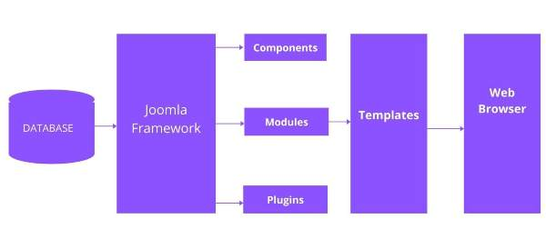

Its simplest function mysql_close PHP provide to close a database connection. This function takes connection resource returned by mysql_connect function. It returns TRUE on success or FALSE on failure.
Syntax
bool mysql_close( resource $link_identifier);
If a resource is not specified then last opend database is closed.
Example
Try out following example to open and close a database connection -
<?php
$dbhost = 'localhost:3036';
$dbuser = 'guest';
$dbpass = 'guest123';
$conn = mysql_connect ($dbhost, $dbuser, $dbpass);
if( ! $conn ) {
die ( 'Could not connect:' . mysql_error() );
}
echo 'connected successfully';
mysql_close ($conn);
?>
Creating a Database
To create and delete a database you should have admin privillage. Its very easy to create a new MySQL database.
PHP uses mysql_query function to create a MySQL database. This function takes two parameters and returns TRUE on success or FALSE on failure.
Syntax
bool mysql_query( sql, connection );
| Sr.No |
Parameter & Description |
| 1 |
sqlRequired - SQL query to create a database |
| 2 |
connectionOptional - if not specified then last opend connection by mysql_connect will be used. |
Example
Try out following example to create a database-
<?php
$dbhost = 'localhost:3036';
$dbuser = 'root';
$dbpass = 'rootpassword';
$conn = mysql_connect ($dbhost, $dbuser, $dbpass);
if( ! $conn ) {
die ('Could not connect:' . mysql_error());
}
echo 'Connected successfully';
$sql = 'CREATE Database test_db';
$retval = mysql_query ( $sql, $conn);
if(! $retval ) {
die('Could not create database:' . mysql_error());
}
echo "Database test_db created successfully\n";
mysql_close($conn);
?>
Selecting a Database
Once you establish a connection with a database server then it is required to select a particular database where your all the tables are associated.
This is required because there may be multiple databases residing on a single server and you can do work with a single database at a time.
PHP provides function mysql_select_db to select a database. It returns TRUE on success or FALSE on failure.
Syntax
bool mysql_select_db( db_name, connection );
| Sr.No |
Parameter & Description |
| 1 |
db_nameRequired - Database name to be selected |
| 2 |
connectionOptional - if not specified then last opend connection by mysql_connect will be used. |
Example
Here is the example showing you how to select a database.
<?php
$dbhost = 'localhost:3036';
$dbuser = 'guest';
$dbpass = 'guest123';
$conn = mysql_connect ($dbhost, $dbuser, $dbpass);
if( ! $conn ) {
die ('Could not connect:' . mysql_error());
}
echo 'Connected successfully';
mysql_select_db( test_db' );
mysql_close ($conn);
?>
Creating Database Tables
To create tables in the new database you need to do the same thing as creating the database. First create the SQL query to create the tables then execute the query using mysql_query() function.
Example
Try out following example to create a table-
<?php
$dbhost = 'localhost:3036';
$dbuser = 'guest';
$dbpass = 'guest123';
$conn = mysql_connect ($dbhost, $dbuser, $dbpass);
if( ! $conn ) {
die ('Could not connect:' . mysql_error());
}
echo 'Connected successfully';
$sql = 'CREATE TABLE employee( '.
'emp_id INT NOT NULL AUTO_INCREMENT, ' .
'emp_name VARCHAR (20) NOT NULL, ' .
'emp_address VARCHAR (20) NOT NULL, ' .
'emp_salary INT NOT NULL, ' .
'join_date timestamp(14) NOT NULL'
'primary key ( emp_id ))';
mysql_select_db('test_db');
$retval = mysql_query( $sql, $conn );
if(! $retval ) {
die('Could not create table: ' . mysql_error());
}
echo "Table employee created successfully\n";
mysql_close ($conn);
?>
To create tables in the new database you need to do the same thing as creating the database.
First create the SQL query to create the tables then execute the query using mysql_query() function.
Consider the following content in sql_query.txt file
CREATE TABLE employee(
emp_id INT NOT NULL AUTO_INCREMENT,
emp_name VARCHAR (20) NOT NULL,
emp_address VARCHAR (20) NOT NULL,
emp_salary INT NOT NULL,
join_date timestamp (14) NOT NULL,
primary key ( emp_id ));
<?php
$dbhost = 'localhost:3036';
$dbuser = 'root';
$dbpass = 'rootpassword';
$conn = mysql_connect ($dbhost, $dbuser, $dbpass);
if( ! $conn ) {
die ('Could not connect:' . mysql_error() );
}
$query_file = 'sql_query.txt';
$fp = fopen($query_file, 'r');
$sql = fread($fp, filesize($query_file));
fclose($fp);
mysql_select_db('test_db');
$retval = mysql_query( $sql, $conn );
if(! $retval ) {
die('Could not create table: ' . mysql_error());
}
echo "Table employee created successfully\n";
mysql_close ($conn);
?>
Deleting a Database
If a database is no longer required then it can be deleted forever. You can use pass an SQL command to mysql_query to delete a database.
Example
Try out following example to drop a database.
<?php
$dbhost = 'localhost:3036';
$dbuser = 'root';
$dbpass = 'rootpassword';
$conn = mysql_connect ($dbhost, $dbuser, $dbpass);
if( ! $conn ) {
die ('Could not connect:' . mysql_error());
}
$sql = 'DROP DATABASE test_db';
$retval = mysql_query( $sql, $conn );
if(! $retval ) {
die('Could not delete database db_test: ' . mysql_error());
}
echo "Database deleted successfully\n";
mysql_close ($conn);
?>
WARNING -
its very dangerous to delete a database and any table. So before deleting any table or database you should make sure you are doing everything intentionally.
Deleting a Table
Its again a matter of issuing one SQL command through mysql_query function to delete any database table.
But be very careful while using this command because by doing so any database table. But be very careful
while using this command because by doing so you can delete some important information you have in your table.
Example
Try out following example to drop a table -
<?php
$dbhost = 'localhost:3036';
$dbuser = 'root';
$dbpass = 'rootpassword';
$conn = mysql_connect ($dbhost, $dbuser, $dbpass);
if( ! $conn ) {
die ('Could not connect:' . mysql_error());
}
$sql = 'DROP TABLE employee';
$retval = mysql_query( $sql, $conn );
if(! $retval ) {
die('Could not delete table employee: ' . mysql_error());
}
echo "Table deleted successfully\n";
mysql_close ($conn);
?>
Data can be entered into MySQL tables by executing SQL INSERT statement through PHP function mysql_query.
below a simple example to insert a record into employee table.
Example
Try out following example to insert record into employee table.
<?php
$dbhost = 'localhost:3036';
$dbuser = 'root';
$dbpass = 'rootpassword';
$conn = mysql_connect ($dbhost, $dbuser, $dbpass);
if( ! $conn ) {
die ('Could not connect:' . mysql_error());
}
$sql = ' INSERT INTO employee '.
'(emp_name,emp_address,emp_salary, join_date)' .
'VALUES ("guest", "XYZ", 2000, NOW() )';
mysql_select_db('test_db');
$retval = mysql_query( $sql, $conn );
if(! $retval ) {
die('Could not delete database db_test: ' . mysql_error());
}
echo "Entered data successfully\n";
mysql_close ($conn);
?>
In real application, all the values will be taken using HTML form and then those values
will be captured using PHP script and finally they will be inserted into MySQL tables.
Data can be fetched from MySQL tables by executing SQL SELECT statement through PHP function
mysql_query. You have several options to fetch data from MySQL.
The most frequently used option is to use function mysql_fetch_array(). This function returns
row as an associative array, a numeric array, or both. This function returns FALSE if there are
no more rows.
Below is a simple example to fetch records from employee table.
Example
Try out following example to display all the records from employee table.
<?php
$dbhost = 'localhost:3036';
$dbuser = 'root';
$dbpass = 'rootpassword';
$conn = mysql_connect ($dbhost, $dbuser, $dbpass);
if( ! $conn ) {
die ('Could not connect:' . mysql_error());
}
$sql = 'SELECT emp_id, emp_name, emp_salary FROM employee';
mysql_select_db('test_db');
$retval = mysql_query( $sql, $conn );
if(! $retval ) {
die('Could not delete database db_test: ' . mysql_error());
}
mysql_close ($conn);
?>
Web Hosting
Web hosting is a service of providing online space of storage of web pages.
These web pages are made available via World Wide Web. The companies which offer website hosting are known as Web hosts.
The servers on which web site is hosted remain switched on 24x7.
These servers are run by web hosting companies.
Each server has its own IP address.
Since IP addresses are difficult to remember therefore, webmaster points their domain name to the IP address of the server their website is stored on.
It is not possible to host your website on your local computer, to do so you would have to leave your computer on 24 hours a day.
This is not practical and cheaper as well.
This is where web hosting companies comes in.
Types of Hosting
The following table describes different types of hosting that can be availed as per the need:
| S.N. |
Hosting Description |
| 1. |
Shared Hosting
In shared hosting, the hosting company puts thousand of website on the same physical server.
Each customer has their own allocation of physical web space and a set of bandwidth limit.
As all websites share same physical memory, MYSQL server and Apache server, one website on
the server experiencing high traffic load will affect performance of all websites on the server.
|
| 2. |
Virtual Private Server (VPS)
It is also known as Virtual Dedicated Server. It is a server which is partitioned into smaller servers.
In this customer is given their own partition, which is installed with its own operating system.
Unlike shared hosting, VPS doesn't share memory or processor time rather it allocates certain amount
of memory and CPU to use which means that any problem on a VPS partition on the same drive will not
affect other VPS customers.
|
| 3. |
Dedicated Server
In this kind of hosting, single dedicated server is setup for just one customer.
It is commonly used by the businesses that need the power, control and security
that a dedicated server offers.
|
| 4. |
Reseller Hosting
A reseller acts as a middle man and sells hosting space of someone else's server.
|
| 5. |
Grid Hosting
Instead of utilizing one server, Grid Hosting spreads resources over a large number of servers.
It is quite stable and flexible. The servers can be added or taken away from the grid without
crashing the system.
|
Web Hosting Companies
Following are the several companies offering web hosting service:
| S.N. |
Hosting Company |
| 1. |
Blue Host |
| 2. |
Go Daddy |
| 3. |
Host Gator |
| 4. |
just Host |
| 5. |
Laughing Squid |
| 6. |
Hivelocity |
| 7. |
liquid Web |
| 8. |
Media TempleServlnt |
| 9. |
Wired Tree |
| 10. |
Wild West Domains |
| 11. |
Wix |
| 12. |
WIPL |
| 13. |
Big Rock |
Domain Name Registration
Web Hosting and Domain Registration are two elements of running a websites. But it's important to understand the difference and use cases.
Web Hosting is an account on a computer (aka server) that can store and serve website files via the Internet.
Domain Registration is leasing a human-readable word (e.g., amazon.com) that directs people to specific website files via a browser.
As an analogy, a domanin is an "address" on the Internet. Hosting is the "land" or space where your website files live.
Internet addresses are technically "IP Addresses." IP addresses are a long series of numbers that make no sense to humans.
So instead of typing in 192.168.0.1.1 to access a website owner can register a domain that will route to that specific IP address.
When you register a domain name, you are leasing it from the Internet Corporation for Names and Numbers (ICANN). ICANN provides domains via approved registers.
A domain does not do anything on its own. Registration provides you the right to "point" your domain wherever you want.
You can tell it to redirect to another website - But usually, you'll want it to direct browsers to your website...on your hosting account.
Content Management System (CMS)
Content Management System (CMS) Platforms are applications which allow to create and run your website. You will get an Admin Panel, which is an interface where you can create and update pages, posts and other type of content (images, videos, etc.) and arrange the content the way you need.
You will also be able to change the design of the site through the admin panel by installing themes (design templates) and changing them. All the actions are done simply by clicking on various buttons. You don't have to write codes or scripts in most cases, so you can manage your content easily.
The most prominent CMS platforms are WordPress, Joomla and Drupal. They are free and open source CMS engines. That means their source code is open to the public. You can use, edit and customize the code files of the engine on your site and if you discover a great way to improve the platform, you can pitch it to the developers and help in making their engine even better in their next update.
WordPress is an open source CMS. More than 50 % of the webpages are by that platform. It is getting more comprehensive, intuitive and popular with each new update release. WordPress has a committed community, which has tonnes of free extensions and the easiest-to-use interface.
Managing your content with WordPress is perfectly simple: you create a page, add it to the menu, post something on it and see your content on the front-end of your site. All that adds up to a pre-eminent CMS platform. The official webpage is https://wordpress.com/.
Joomla has balance between customization possibilities and user-friendliness, yet it is much more complex than WordPress. If you have never worked with this engine before, you will need some time to get used to modifying it. Assigning plugins to modules, positioning modules on different pages, configuring layouts and other necessary manipulations can be a bit hard on a beginner developer.
On the other hand, Joomla extension developers and community have come up with many inspired solutions for coomon web design problems that are hard to resolve within WordPress. If we take any Joomla slider extension as an example, you can set its location on the page, the duration for showing each slide, the sliding effect and the type of pagination.
Its official webpage is https://www.joomla.org/.
Drupal is for huge websites and organizations that can afford full-time administrators. You can do almost anything with Drupal. I am often fascinated by how many options the engine contains out of the box. Lots of things which in WordPress or Joomla would require custom coding have readymade solutions by default in Drupal. It can be enhanced even more with third-party extensions. But, I will be honest with you - learning to operate it, is the real challenge. It takes a lot of work and patience to master.
Its official website is https://www.drupal.org/.
Joomla - Content Management System
Joomla is an open source Content Management System (CMS), which is used to build websites and online applications. It is free and extendable which is separated into front-end and back-end templates (administrator). Joomla is developed using PHP, Object Oriented Programming, software design patterns and MySQL (used for storing the data).
The following diagram shows the architecture of Joomla.

The architecture of Joomla contains following layers -
- Database
- Joomla Framework
- Components
- Modules
- Plugin
- Templates
- Web Browser
Database - Database is a collection of data and can be stored, manipulated and organized in a particular manner. The database stores the user information, content and many more required data of the site. Using Joomla database layer, it ensures maximum flexibility and compatibility for extension.
Joomla Framework - Framework is a collection of open source software, where the Joomla CMS is built. It is developed for more flexibility and breaks the framework into single modular packages which helps each package to deveolp more easily.
Components - Components are considered as mini applications. It consists of two parts i.e. Administrator and Site. Whenever a page gets loaded, component is been called to render the body of main page. The Administrator part manages different aspects of the component and the site part helps in rendering the pages when request is made by site visitor. Components are main functional unit of Joomla.
Modules - Modules is an extension which is used to render the pages in Joomla. It is also used to display the new data from the component. It frequently looks like boxes such as login module. In Joomla administrator the modules are managed by the module manager. It displays the new content and images when module is linked to Joomla components.
Plugin - This is also a kind of Joomla extension, it is very flexible and powerful for extending the framework. It contains a bit of codes that is used to execute the particular event trigger. It is commonly used to format the output of a component or module when a page is built. The plugin function which are associated with event are executed in a sequence when a particular event occurs.
Templates - Template determines the look of the Joomla website. There are two types of templates used i.e. Front-end and Back-end. The Back-end template is used to control the functions by the administrator where-as the Front-end template is a way to present the website to users. Templates are easy to build or customize your site. It provides maximum flexibility to style your site.
Web Browser - It is a server where the user interacts. It delivers the web pages to the client. The HTTP (Hyper Text Transfer Protocol) is used to communicate between the client and the server.